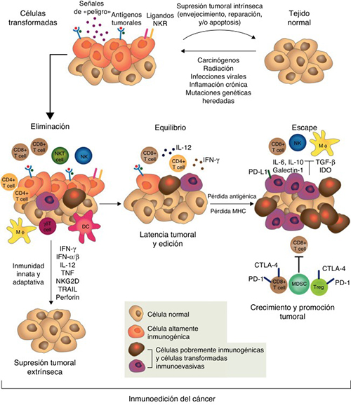
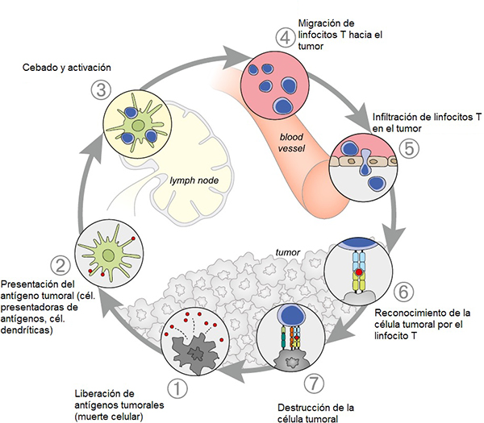

ICO 24h
MÓDULO 5 : Urgencias relacionadas con la inmunoterapia oncológica
5.1.2 Inmunología aplicada al cáncer
-
Inmunoedición del cáncer :
Los tumores utilizan complejos mecanismos para evadir y suprimir el control por el sistema inmune, en el contexto de un proceso conocido como inmunoedición.
Inmunoedición del cáncerLas células normales están expuestas a estímulos oncogénicos que pueden conducir a la transformación maligna. El proceso de inmunoedición del cáncer está compuesto por tres fases: eliminación o inmunovigilancia, en el cual las células tumorales exponen señales que pueden mediar su eliminación por el sistema inmune antes de ser clínicamente aparentes. La segunda fase de equilibrio, donde las células tumorales y el sistema inmune están en equilibrio dinámico, y la fase de escape donde las células tumorales tienen inmunogenicidad reducida o mecanismos inmunosupresores para atenuar respuestas.

-
Ciclo cáncer-inmunidad :
Para que una respuesta inmune contra el cáncer conduzca a la muerte efectiva de células cancerosas, se debe iniciar una serie de eventos escalonados que deben avanzar y expandirse iterativamente. Estos diferentes pasos se conocen como el ciclo cáncer-inmunidad.
